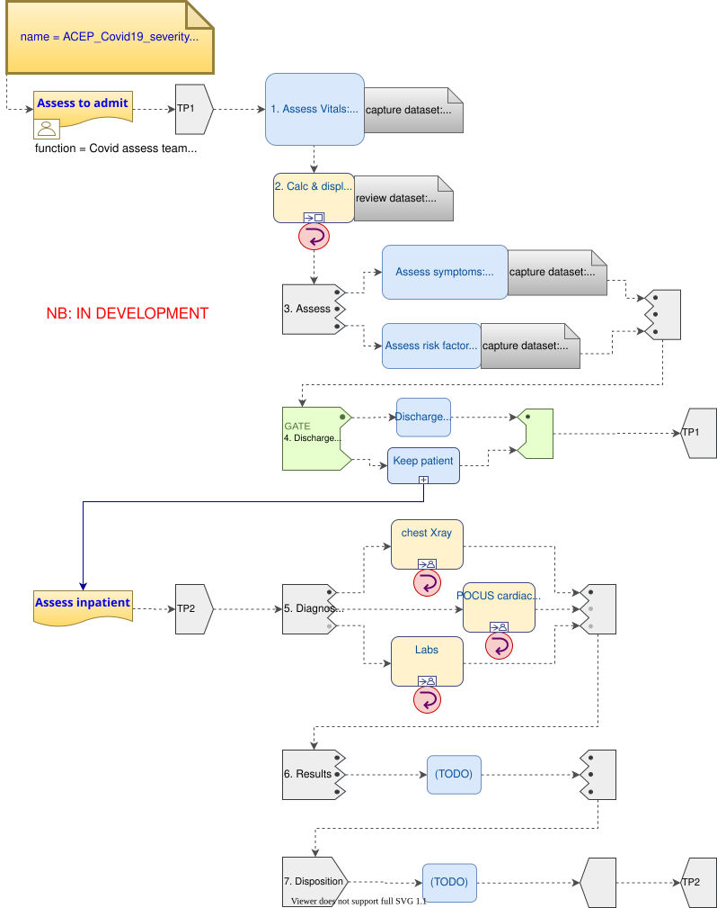

Covid19 Severity Classification
This guideline is a formal expression of the American College of Emergency Physicians (ACEP) Covid19 Severity Classification tool and as an Interactive tool.
Work Plan
The following work plan is a rendition of the ACEP Covid19 severity guideline multi-step structure.

Figure 1. ACEP Covid19 Work Plan
Decision Logic Module
dlm ACEP_COVID19_severity_classification.v0.5.0
definitions -- Descriptive
language = {
original_language: [ISO_639-1::en]
}
;
description = {
lifecycle_state: "unmanaged",
original_author: {
name: "Thomas Beale",
email: "thomas.beale@openEHR.org",
organisation : "openEHR Foundation <http://www.openEHR.org>",
date: 2020-12-02
},
details = {
"en" : {
language: [ISO_639-1::en],
purpose: "This tool was developed by ACEP and EvidenceCare to assist
in determining the appropriate evaluation and disposition
for adult patients with suspected or confirmed COVID-19.",
}
},
copyright: "© 2020 openEHR Foundation",
licence: "Creative Commons CC-BY <https://creativecommons.org/licenses/by/3.0/>",
ip_acknowledgements = {
"ACEP_EvidenceCare" : {"This content developed from original publication of
© 2020 American College of Emergency Physicians (ACEP), EvidenceCare,
see https://www.acep.org/globalassets/sites/acep/media/covid-19-main/acep_evidencecare_covid19severitytool.pdf"},
}
}
;
use
BASIC: Basic_patient_data.v0.5.0
BMI: Body_mass_index.v0.5.0
input -- Administrative State
is_LT_care_resident: Boolean
;
input -- Historical State
|
| Extract from master problem list or ask patient
|
has_cardiovascular_disease: Boolean
;
|
| Extract from master problem list or ask patient
|
has cerebrovascular_disease: Boolean
;
|
| Extract from master problem list or ask patient
|
has_COPD: Boolean
;
|
| Extract from master problem list or ask patient
|
is_type_2_diabetic: Boolean
;
|
| Extract from master problem list or ask patient
|
has_hypertension: Boolean
;
|
| True if any cancer diagnosis on master problem list
| or ask patient
|
has_malignancy: Boolean
;
input -- Tracked State
heart_rate: Count
currency = 1 min,
ranges["/min"] =
------------------------------
|≤99|: #mild_low_risk,
|100..120|: #mild_at_risk,
|≥121|: #moderate_risk
------------------------------
;
systolic_BP: Quantity
currency = 10 min,
ranges["mmHg"] =
------------------------
|<90|: #critical_risk,
|≥90|: #normal_risk
------------------------
;
|
| Minimum documented within last 8 hrs
|
lowest_SpO2: Quantity
currency = 8 hr,
ranges["%"] =
----------------------------
|≥93|: #mild_low_risk,
|89..92|: #moderate_risk,
|≤88|: #severe_risk
----------------------------
;
respiratory_rate: Quantity
currency = 2 min
ranges["/min"] =
-----------------------------
|≤ 22|: #mild_low_risk,
|23 .. 28|: #moderate_risk,
|≥ 29|: #severe_risk
-----------------------------
;
O2_flow_rate: Quantity
currency = 2 min,
ranges["L/min"] =
--------------------------
|0|: #mild_low_risk,
|1..2|: #mild_at_risk,
|3..4|: #moderate_risk,
|≥5|: #severe_risk
--------------------------
;
|
| Reference SpO2 for exertional test: a 1-minute sit-to-stand
| test can be performed within the patient’s room.
| With this, they sit and stand as many as they can over the
| course of 1 minute.
| * A 3% drop in pulse oximeter reading is considered a positive test
|
SpO2_exertion_reference: Quantity
currency = 5 min
;
|
| Post exertion SpO2
|
SpO2_exertion_post: Quantity
currency = 5 min
;
has_altered_LOC: Boolean
currency = 5 min
;
has_hemoptysis: Boolean
currency = 5 min
;
has_persistent_dyspnea: Boolean
currency = 5 min
;
rules -- Main
heart_rate_score: Integer
Result := case heart_rate in
=====================
*: 0
=====================
;
systolic_BP_score: Integer
Result := case systolic_BP in
=====================
*: 0
=====================
;
SpO2_score: Integer
Result := case lowest_SpO2 in
=====================
#mild_low_risk: 0,
---------------------
#moderate_risk: 2,
---------------------
#severe_risk: 5,
---------------------
*: 0
=====================
;
respiratory_rate_score: Integer
Result := case respiratory_rate in
=====================
#mild_low_risk: 0,
---------------------
#mild_at_risk: 1,
---------------------
#moderate_risk: 2,
---------------------
*: 0
=====================
;
O2_flow_rate_score: Integer
Result := case O2_flow_rate in
=====================
#mild_low_risk,
#mild_at_risk: 0,
---------------------
#moderate_risk: 4,
---------------------
#severe_risk: 5,
---------------------
*: 0
=====================
;
|
| Compute the qCSI score from vital signs sub-scores
|
qCSI_score: Integer
Result := heart_rate_score +
systolic_BP_score +
SpO2_score +
respiratory_rate_score +
O2_flow_rate_score
;
|
| ACEP step 2 assessment
|
qCSI_risk: Terminology_code
Result := case qCSI_score in
============================
0: #mild_low_risk,
----------------------------
|1..2|: #mild_at_risk,
----------------------------
|3..5|: #moderate_risk,
----------------------------
|6..8|: #severe_risk,
----------------------------
|≥ 9|: #critical_risk
============================
;
|
| Count demographic related risk factors
|
risk_factors_demographic_count: Integer
Result.add (
------------------------------------
BASIC.sex = #male ? 1 : 0,
BASIC.age > 60 ? 1 : 0,
BASIC.race = #black_race ? 1 : 0
------------------------------------
);
|
| Count medical / history related risk factors
|
risk_factors_medical_count: Integer
Result.add (
--------------------------------------
has_cardiovascular_disease ? 1 : 0,
has cerebrovascular_disease ? 1 : 0,
has_COPD ? 1 : 0,
is_type_2_diabetic ? 1 : 0,
has_hypertension ? 1 : 0,
has_malignancy ? 1 : 0,
BMI.bmi > 30 ? 1 : 0,
has_renal_disease ? 1 : 0
--------------------------------------
);
|
| Total pre-existing risk factors count
|
risk_factors_count: Integer
Result := risk_factors_demographic_count +
risk_factors_medical_count
;
|
| ACEP step 3 assessment
| NB: must be assessed in highest -> lowest order
|
symptoms_related_risk: Terminology_code
Result := choice of
====================================================
has_altered_LOC: #critical_risk,
----------------------------------------------------
has_hemoptysis: #severe_risk,
----------------------------------------------------
has_persistent_dyspnea or
is_LT_care_resident: #moderate_risk,
----------------------------------------------------
risk_factors_count ∈ {|≥ 2|}: #mild_at_risk,
----------------------------------------------------
risk_factors_count ∈ {|0..1|}: #mild_low_risk
====================================================
;
|
| Discharge home rule based on various criteria
|
can_discharge: Boolean
Result :=
qCSI_risk = #mild_low_risk and
symptoms_related_risk = #mild_low_risk and
exertional_SpO2_drop = #normal and
TO BE COMPLETED
;
|
| Generate a % drop in SpO2 over 1 min sit/stand exertion test;
| NB: A fall in SpO2 generates a +ve result value.
|
exertional_SpO2_drop: Quantity
Result := (SpO2_exertion_reference - SpO2_exertion_post)/SpO2_exertion_reference * 100
;
exertional_SpO2_result: Terminology_code
Result := case exertional_SpO2_drop in
========================
|< 3%|: #normal,
------------------------
|≥ 3%|: #mild_at_risk
========================
;
definitions -- Terminology
terminology = {
term_definitions: {
"en" : {
"qCSI_score" : {
text: "..."
},
"qCSI_risk" : {
text: "..."
},
"risk_factors_demographic_count" : {
text: "..."
},
"risk_factors_medical_count" : {
text: "..."
},
"risk_factors_count" : {
text: "..."
},
"symptoms_related_risk" : {
text: "..."
},
"exertional_SpO2_drop" : {
text: "..."
},
"exertional_SpO2_result" : {
text: "..."
}
}
}
}
;